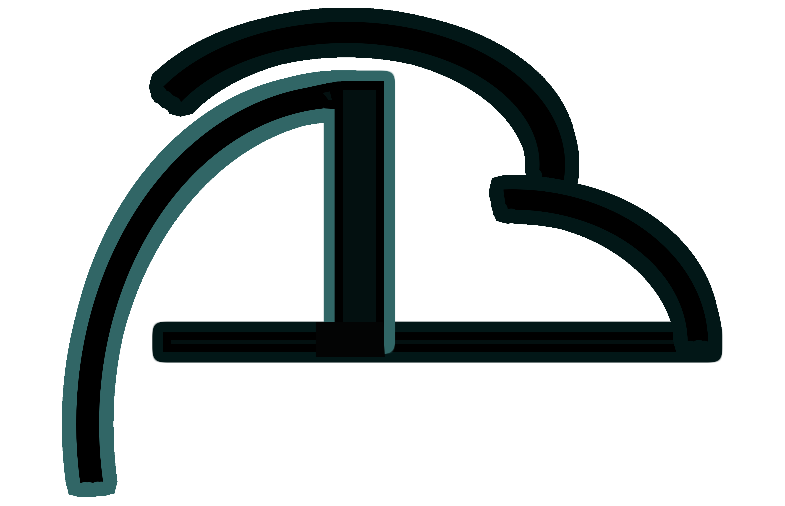

Bienvenue sur monportfolio.
En première année d'un "DEUST Webmaster et métiers de l'internet" à l'université de Limoges ,
j'ai toujours été attiré par la technologie.
Je me suis, en premier lieu, perfectionné sur des logiciels et appareils de MAO (musique
assistée par ordinateur),
avant de me tourner vers le traitement d'image et
vidéo.
Ayant également fait de la sonorisation
et de l'éclairage spectacle,
j'ai toujours appris en autodidacte, et ne suis "satisfait" que lorsque je maitrise l'outil dont je dispose.
Regisseur technique (fonctionnaire
territorial) depuis une dizaine d'années,
mon parcours m'amène aujourd'hui dans le developpement et l'intégration de contenu web
qui regroupent tout ce que j'aime:
création, adaptation, technologies, challenges, et opportunités.
Souhaitant créer un site internet pour le partage de matériel spectacle et multimédia, j'ai tout d'abord essayé Wordpress.
Puis, j'ai suivi les cours gratuit OpenClassroom HTML/CSS, Bootstrap et JS.
J'ai alors pu commencer à faire quelque chose de plus précis et personnalisé.
Après un module en 4 mois
"Architecture du web et développement côté client" (NFAO16) avec le CNAM Nouvelle-Aquitaine,
qui a confirmé mes capacités et mon intérêt grandissant pour le web,
mon regard s'est tourné vers l'Université de Limoges
avec l'apprentissage à distance CVtic qui me semblait tout indiqué.
Dans ce cadre, j'aurai un stage d'un mois (140h) à effectuer;
Particulièrement motivé par le développement web orienté Front-end,
ce stage me permettrait d'ameliorer mes techniques, et découvrir les outils et pratiques,
utilisés en entreprise.
Souhaitant m'investir pleinement, je m'efforcerai naturellement de progressser
tout en remplissant les missions que l'on pourra me confier,
afin de permettre également à ma structure d'accueil de tirer profit de mes compétences en devenir.